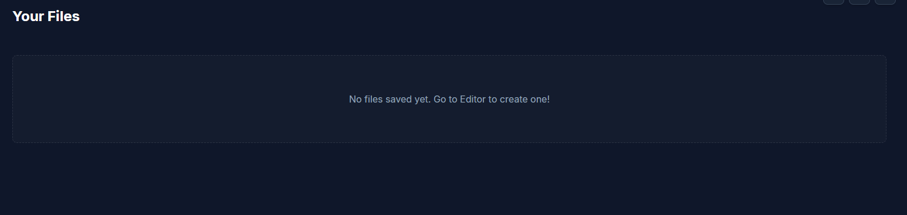
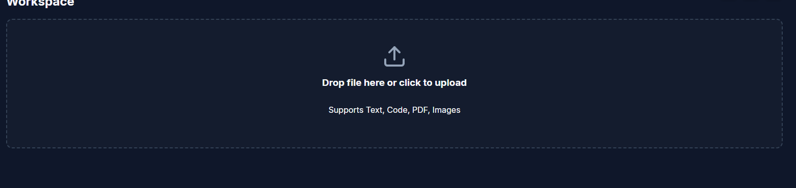
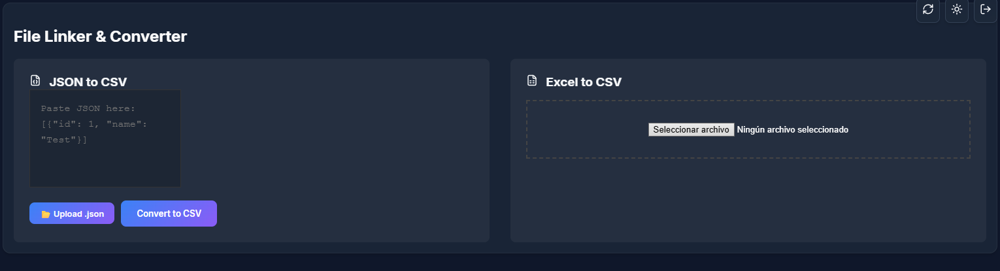
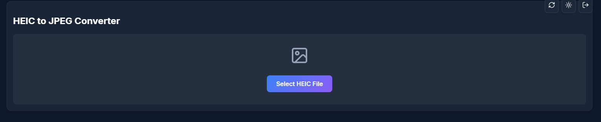
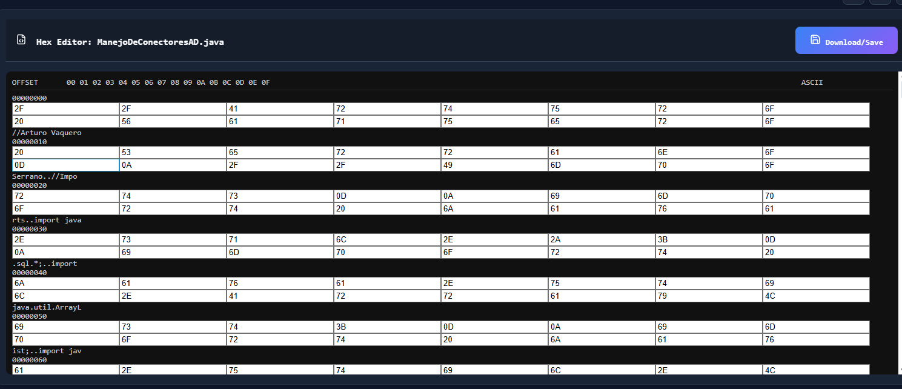
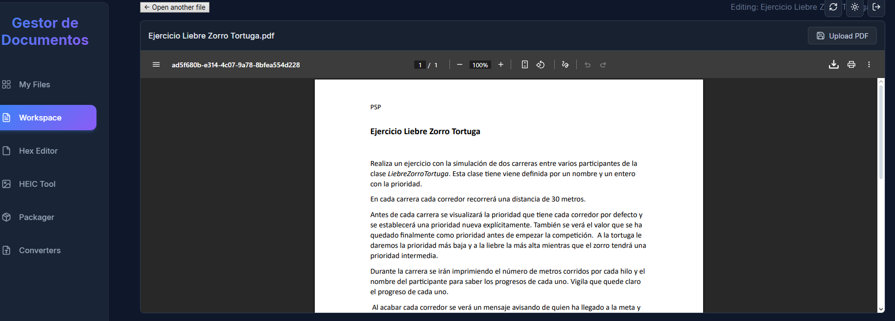
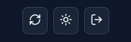
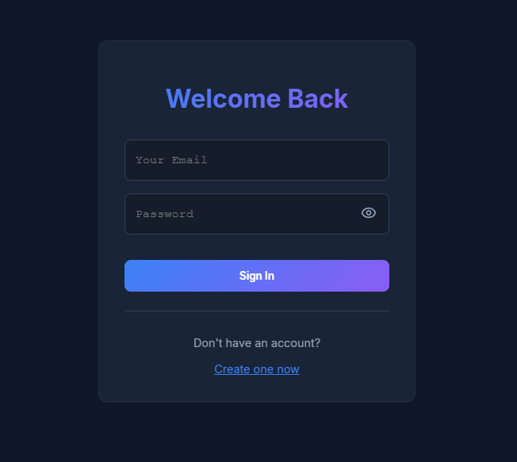
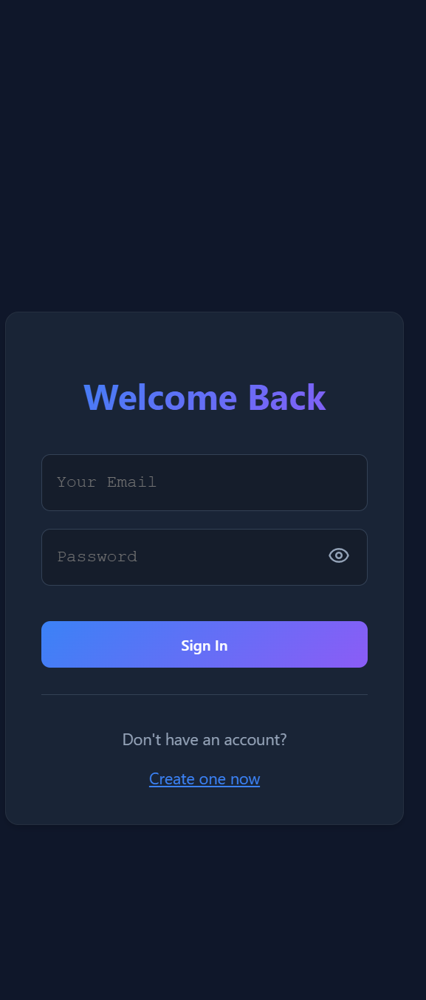

Parte 2 Historial de Prompts
Evolución paso a paso del proyecto, desde la creación base hasta la versión móvil.
Prompt 1: Estructura Base y Editor de Texto
Creación del proyecto y funcionalidad básica para archivos de texto.
Actúa como un desarrollador experto en front end y backend...
Quiero crear un proyecto que permite que subas archivos de los diferentes tipos (PDF, JSON, MD, TXT)...
Crea una pagina principal, donde se seleccionaran diferentes pestañas y haz que esta sea la primera pestaña, solo para archivos de texto.
Ten en cuenta que se va a subir a supabase...
Resultado Prompt 1:

Prompt 2: Soporte Multi-formato (PDF, JSON, MD)
Implementación de nuevos formatos y almacenamiento en Supabase Storage.
Como siguiente paso vamos a inplementar todas las categorias del proyecto (pdf, json y MD), ademas de hacer que podamos guardar los archivos correctamente en supabase.
Resultado Prompt 2:

Prompt 3: Conversores y Organización
Reorganización de pestañas y herramientas de conversión de datos.
Quiero que para el siguiente paso, organices las pestañas para que sea mas intuitivo, ademas añade opciones para pasar de archivos JSON a CSV y de tabla de excel a CSV.
Resultado Prompt 3:

Prompt 4: Conversor HEIC y Modo Estricto
Soporte para imágenes HEIC y restricciones en el editor de texto.
Añade una nueva pestaña, esta pestaña sera especialmente para pasar de archivos HEIC a un formato de imagen mucho mas comun y habitual, como jpeg.
Arregla el formato de editor de texto y haz que solo se puedan abirir archivos que realmente se puedan editar y no pdf por ejemplo.
Resultado Prompt 4:

Prompt 5: Dashboard y Sidebar
Creación de la barra lateral y zona central de "Mis Archivos".
Reestructura el lector de archivos para que las opciones esten a la izquierda de la aplicación, que en el medio haya una zona grande donde añadir archivos guardados en supabase...
Resultado Prompt 5:

Prompt 6: Herramientas Avanzadas
Editor visual de código, editor hexadecimal, conversor HEIC por lotes y empaquetador ZIP.
Añade las siguientes herramientas: si se abre un archivo con extensión de programación .json,.py,.html, .js o java se tiene que mostrar el archivo con formato visual...
Añadir un lector Hexadecimal...
Añade que en el conversor de HEIC se puedan pasar un paquete de fotos...
Añade una sección nueva para... hacer paquetes de archivos.
Resultado Prompt 6:

Prompt 7: Workspace Unificado
Detección automática del tipo de archivo en una única vista.
En la pestaña de visor de archivos y documentos ha de unificarse, haciendo que la aplicación entienda cuando es un archivo visible y un archivo editable de manera automática.
Resultado Prompt 7:

Prompt 8: Modo Oscuro y Mejoras JSON
Implementación de tema día/noche y mejora en el flujo de conversión.
Quiero añadir y arreglar cosas de la aplicación. Primero quiero añadir un modo noche y modo día, con un toggle que sea intuitivo...
Quiero que en el apartado de "Converters" cambies, mejores y hagas más intuitiva el la interfaz... haciendo que se cree el csv a partir de un archivo json ya existente.
Resultado Prompt 8:

Prompt 9: Autenticación (Login/Registro)
Sistema de seguridad obligatorio al inicio.
Añade una verificación de sesión para el usuario... si quiere crear un usuario, se añadirá una pestaña abajo para "Crear usuario"...
Esta pestaña de iniciar sesión ha de ser la primera pagina que salga al iniciar la app.
Resultado Prompt 9:

Prompt 10: Adaptación Móvil y Detalles
Diseño responsivo y mejoras en la experiencia de usuario (UX) en el login.
Quiero que adaptes la interfaz para móviles, que sea capaz de verse de manera correcta...
Además en la puerta de entrada permite que los usuarios vean dandole click a un botón que contraseña están usando...
Resultado Prompt 10:
